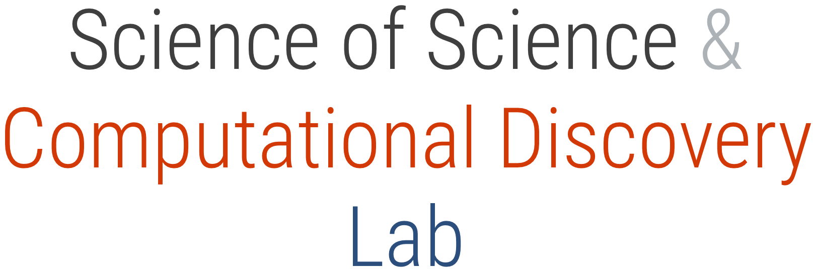

We moved! Now we are in the Computer Science Department at Colorado University, Boulder. We are looking for Ph.D. students, master students, and pre-doctoral students to work on a broad range of projects on science of science, computational research integrity, and fairness in AI.
Deadline to apply to the Ph.D. is December 15, 2022.
Read more
Upcoming events
- May 11-12, 2023: Daniel is organizing the Computational Research Integrity Conference 2023 - details soon. See you in Washington, DC!
- May 24-26, 2023: Daniel will be part of the Program Committee for the 9th Atlanta Conference on Science and Innovation Policy at the Georgia Institute of Technology. See you in Georgia!
- July 17 - 20, 2023 : Daniel will be part of the Program Committee for the 9th International Conference on Computational Social Science. See you in Copenhagen!
News
- August 22, 2022: Daniel will present his work on large scale nearest neighbor search during the Ray Summit Meetup, part of Ray Summit 2022
- August 1-12, 2022: Science of Science Summer School (S4) 2022! Virtual. Apply now!
- August 14-18, 2022: Workshop on Data-Driven Science of Science at KDD 2022
- June 11, 2022: Invited talk at International Conference on Data Intelligence & Information Service Development, organized by Tianjin Normal University, China (virtual)
- May, 2022: Daniel Acuna will be a member of the ACM DEI Council, leading the focus on improving data-driven bias detection and awareness in peer review.
- May, 2022: Daniel Acuna has been promoted to Associate Professor with Tenure!
- November 18, 2021: Daniel Acuna is presenting at the Future Privacy Forum on “Promoting Responsible Research Data Access” (Virtual, by invitation only)
- October 2021: Nanjing University awarded visiting scholar alumni Tong Zeng a research excellence award for high productivity for his work during his visit to SOS+CD!
- September 2021: Postdoctoral alumni Qing Ke joins the Department of Data Science at the City University of Hong Kong!
- July 26 - August 6, 2021: Science of Science Summer School (S4) 2021 with 50+ mentees and 12+ mentors finished successfully!; six micro-grants announced
- June 23, 2021: Daniel Acuna appeared in a The New Yorker article
- June 2021: Massive dataset on mentorship released by SOS+CD in collaboration with Stephen David: MENTORSHIP
- March 23-25, 2021: Computational Research Integrity Conference 2021
- March 17, 2021: Successfully ran the iConference workshop on AI and Science of Science
- December 2020: Daniel Acuna presented at International Conference of Social Computing (virtual)
- July 21, 2020: Daniel Acuna interviewed for Nature News (2020) Pioneering duplication detector trawls thousands of coronavirus preprints
- May 18, 2020: Our work mentioned in Nature Machine Learning Editorial (2020) A match for virtual conferences
- May 13, 2020: Our work mentioned in Nature News (2020) Publishers launch joint effort to tackle altered images in research papers
- May 13, 2020: Our work mentioned in a Nature Feature interview about Elisabeth Bik (2020)
- January 27 - 30, 2020: Presented our work at the ACM FAT Conference Barcelona, Spain
- November 6 - 10, 2019: Daniel Acuna participated in the Data Science Leadership Summit, Santa Fe, New Mexico
- October 14 - 16, 2019: Daniel Acuna and Han Zhuang participated in the Atlanta Conference on Science and Innovation Policy, Atlanta, Georgia
- September 5 - 8, 2019: Daniel Acuna and Han Zhuang participated in the Metascience 2019 Symposium, Stanford University, Stanford, CA. Han Zhuan was awarded the best poster award!
- June 11 - 12, 2019: Daniel Acuna was an invited speaker at the International Conference on Science of Science, Tsinghua University and the University of Chicago Center in Beijing, China
- June 2 - 5, 2019: Presented our work in the 6th World Conference on Research Integrity, Hong Kong
- May 22-23, 2019: 2019 Research Integrity Conference, Chicago, IL
- May 10, 2019: Invited speaker to the 8th Annual Ethics in Biomedical Research Lecture, University of Rochester School of Medicine and Dentistry
- March 31 - April 3, 2019: Short paper presentation at iConference 2019, University of Maryland
- March 20, 2019: Daniel Acuna was invited to present at the Symposium of Yotta Informatics, Tohoku University, Sendai, Japan
- February 23, 2018: Interview for Nature News (2018) Researchers have finally created a tool to spot duplicated images across thousands of papers